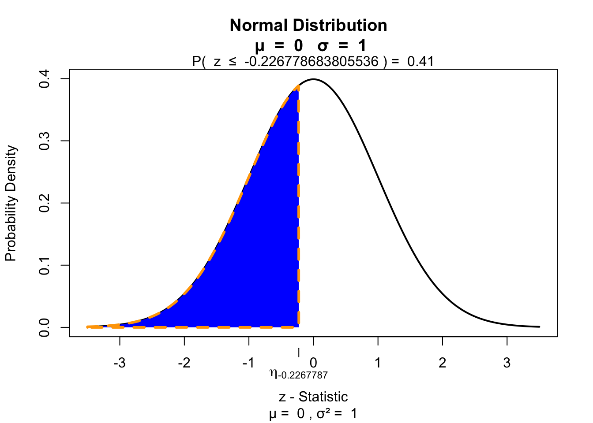

Non-parametric tests
Klinkenberg
3 oct 2020
Inhoud
Nonparametric tests
Parametric vs Nonparametric
| Attribute | Parametric | Nonparametric |
|---|---|---|
| distribution | normaly distributed | any distribution |
| sampling | random sample | random sample |
| sensitivity to outliers | yes | no |
| works with | large data sets | small and large data sets |
| speed | fast | slow |
Ranking
x = c(1, 4, 6, 7, 8, 9)
y = c(1, 4, 6, 7, 8, 39)
layout(matrix(1:2, 1, 2))
boxplot(x, horizontal=T, col='red')
boxplot(y, horizontal=T, col='red')
rbind(rx = rank(x), ry = rank(y))## [,1] [,2] [,3] [,4] [,5] [,6]
## rx 1 2 3 4 5 6
## ry 1 2 3 4 5 6Ties
x = c(1, 4, 6, 7, 8, 8, 4, 7, 9)
rbind(x, ordered = sort(x), non.tied.rank = 1:length(x), ranked = rank(sort(x)))## [,1] [,2] [,3] [,4] [,5] [,6] [,7] [,8] [,9]
## x 1 4.0 6.0 7 8.0 8.0 4.0 7.0 9
## ordered 1 4.0 4.0 6 7.0 7.0 8.0 8.0 9
## non.tied.rank 1 2.0 3.0 4 5.0 6.0 7.0 8.0 9
## ranked 1 2.5 2.5 4 5.5 5.5 7.5 7.5 9\[\frac{2 + 3}{2} = 2.5, \frac{5 + 6}{2} = 5.5, \frac{7 + 8}{2} = 7.5\]
Procedure
- Assumption: independent random samples.
- Hypothesis:
\(H_0\) : equal population distributions (implies equal mean ranking)
\(H_A\) : unequal mean ranking (two sided)
\(H_A\) : higher mean ranking for one group. - Test statistic is difference between mean or sum of ranking.
- Standardise test statistic
- Calculate P-value one or two sided.
- Conclude to reject \(H_0\) if \(p < \alpha\).
Wilcoxon rank-sum test
Independent 2 samples
Wilcoxon rank-sum test

Developed by Frank Wilcoxon the rank-sum test is a nonparametric alternative to the independent samples t-test.
By first ranking \(x\) and then sum these ranks per group one would expect, under the null hypothesis, equal values for both groups.
After standardising this difference one can test using a standard normal distribution.
Sum the ranks
Simulate data
n = 20
factor = rep(c("Ecstasy","Alcohol"),each=n/2)
dummy = ifelse(factor == "Ecstacy", 0, 1)
b.0 = 23
b.1 = 5
error = rnorm(n, 0, 1.7)
depres = b.0 + b.1*dummy + error
depres = round(depres)
data <- data.frame(factor, depres)
## add the ranks
data$R <- rank(data$depres)Example
Calculate the sum of ranks per group
R <- aggregate(R ~ factor, data, sum)
R## factor R
## 1 Alcohol 102
## 2 Ecstasy 108So W is the lowest
\[W=min\left(\sum{R_1},\sum{R_2}\right)\]
W <- min(R$R)
W## [1] 102Standardise W
To calculate the Z score we need to standardise the W. To do so we need the mean W and the standard error of W.
For this we need the sample sizes for each group.
n <- aggregate(R ~ factor, data, length)
n.1 = n$R[1]
n.2 = n$R[2]
cbind(n.1, n.2)## n.1 n.2
## [1,] 10 10Mean W
\[\bar{W}_s=\frac{n_1(n_1+n_2+1)}{2}\]
W.mean = (n.1*(n.1+n.2+1))/2
W.mean## [1] 105SE W
\[{SE}_{\bar{W}_s}=\sqrt{ \frac{n_1 n_2 (n_1+n_2+1)}{12} }\]
W.se = sqrt((n.1*n.2*(n.1+n.2+1))/12)
W.se## [1] 13.22876Calculate Z
\[z = \frac{W - \bar{W}}{{SE}_W}\]
Which looks a lot like
\[\frac{X - \bar{X}}{{SE}_X} \text{or} \frac{b - \mu_{b}}{{SE}_b} \]
z = (W - W.mean) / W.se
z## [1] -0.2267787Test for significance 1 sided
if(!"visualize" %in% installed.packages()){ install.packages("visualize") }
library("visualize")
visualize.norm(z, section="lower")
Test for significance 2 sided
visualize.norm(c(z,-z), section="tails")
Effect size
\[r = \frac{z}{\sqrt{N}}\]
N = sum(n$R)
r = z / sqrt(N)
r## [1] -0.05070926Mann–Whitney test
\[U = n_1 n_2 + \frac{n_1 (n_1 + 1)}{2} - R_1\]
U = (n.1*n.2)+(n.1*(n.1+1))/2-R$R[1]
U## [1] 53\(\bar{U}\) and \({SE}_U\) for non tied ranks
\[\bar{U} = \frac{n_1 n_2}{2}\]
(n.1*n.2)/2## [1] 50\[{SE}_U = \sqrt{\frac{n_1 n_2 (n_1 + n_2 + 1)}{12}}\]
sqrt((n.1*n.2*(n.1+n.2+1))/12)## [1] 13.22876Wilcoxon signed-rank test
Paired 2 samples
Wilcoxon signed-rank test
The Wilcoxon signed-rank test is a nonparametric alternative to the paired samples t-test. It assigns + or - signs to the difference between two repeated measures. By ranking the differences and summing these ranks for the positive group, the null hypothesis is tested that both positive and negative differences are equal.
Simulate data
n = 20
factor = rep(c("Ecstasy","Alcohol"),each=n/2)
dummy = ifelse(factor == "Ecstacy", 0, 1)
b.0 = 23
b.1 = 5
error = rnorm(n, 0, 1.7)
depres = b.0 + b.1*dummy + error
depres = round(depres)
data <- data.frame(factor, depres)
Ecstasy <- subset(data, factor=="Ecstasy")$depres
Alcohol <- subset(data, factor=="Alcohol")$depres
data <- data.frame(Ecstasy, Alcohol)Example
Calculate T
# Calculate difference in scores between first and second measure
data$difference = data$Ecstasy - data$Alcohol
# Calculate absolute difference in scores between first and second measure
data$abs.difference = abs(data$Ecstasy - data$Alcohol)
# Create rank variable with place holder NA
data$rank <- NA
# Rank only the difference scores
data[which(data$difference != 0),'rank'] <- rank(data[which(data$difference != 0),
'abs.difference'])
# Assign a '+' or a '-' to those values
data$sign = sign(data$Ecstasy - data$Alcohol)
# Add positive and negative rank to test if else
data$rank_pos = with(data, ifelse(sign == 1, rank, 0 ))
data$rank_neg = with(data, ifelse(sign == -1, rank, 0 ))The data
Calculate \(T_+\)
# Calculate the sum of the positive ranks
T_pos = sum(data$rank_pos)
T_pos## [1] 18.5# Calculate N without 0 (no differences).
n = sum(abs(data$sign))
n## [1] 7Calculate \(\bar{T}\) and \({SE}_{T}\)
\[\bar{T} = \frac{n(n+1)}{4}\]
T_mean = (n*(n+1))/4
T_mean## [1] 14\[{SE}_{T} = \sqrt{\frac{n(n+1)(2n+1)}{24}}\]
SE_T = sqrt( (n*(n+1)*(2*n+1)) / 24 )Calculate Z
\[z = \frac{T_+ - \bar{T}}{{SE}_T}\]
z = (T_pos - T_mean)/SE_T
z## [1] 0.7606388Test for significance
visualize.norm(c(z,-z), section="tails")
Effect size
\[r = \frac{z}{\sqrt{N}}\]
Here \(N\) is the number of observations.
N = 20
r = z / sqrt(N)
r## [1] 0.170084Kruskal–Wallis test
Independent >2 samples
Kruskal–Wallis test

Created by William Henry Kruskal (L) and Wilson Allen Wallis (R), the Kruskal-Wallis test is a nonparametric alternative to the independent one-way ANOVA.
The Kruskal-Wallis test essentially subtracts the expected mean ranking from the calculated oberved mean ranking, which is \(\chi^2\) distributed.
Simulate data
n = 30
factor = rep(c("ecstasy","alcohol","control"), each=n/3)
dummy.1 = ifelse(factor == "alcohol", 1, 0)
dummy.2 = ifelse(factor == "ecstasy", 1, 0)
b.0 = 23
b.1 = 0
b.2 = 0
error = rnorm(n, 0, 1.7)
# Model
depres = b.0 + b.1*dummy.1 + b.2*dummy.2 + error
depres = round(depres)
data <- data.frame(factor, depres)Assign ranks
# Assign ranks
data$ranks = rank(data$depres)The data
Calculate H
\[H = \frac{12}{N(N+1)} \sum_{i=1}^k \frac{R_i^2}{n_i} - 3(N+1)\]
- \(N\) total sample size
- \(n_i\) sample size per group
- \(k\) number of groups
- \(R_i\) rank sums per group
Calculate H
# Now we need the sum of the ranks per group.
R.i = aggregate(ranks ~ factor, data = data, sum)$ranks
R.i## [1] 207.0 121.5 136.5# De total sample size N is:
N = nrow(data)
# And the sample size per group is n_i:
n.i = aggregate(depres ~ factor, data=data, length)$depres
n.i## [1] 10 10 10Calculate H
\[H = \frac{12}{N(N+1)} \sum_{i=1}^k \frac{R_i^2}{n_i} - 3(N+1)\]
H = ( 12/(N*(N+1)) ) * sum(R.i^2/n.i) - 3*(N+1)
H## [1] 5.37871And the degrees of freedom
k = 3
df = k - 1Test for significance
visualize.chisq(H, df, section="upper")
Friedman’s ANOVA
Paired >2 samples
Friedman’s ANOVA

Created by William Frederick Friedman the Friedman’s ANOVA is a nonparametric alternative to the repeated one-way ANOVA.
Just like the Kruskal-Wallis test, Friedman’s ANOVA, subtracts the expected mean ranking from the calculated observed mean ranking, which is also \(\chi^2\) distributed.
Simulate data
n = 30
factor = rep(c("ecstasy","alcohol","control"), each=n/3)
dummy.1 = ifelse(factor == "alcohol", 1, 0)
dummy.2 = ifelse(factor == "ecstasy", 1, 0)
b.0 = 23
b.1 = 0
b.2 = 0
error = rnorm(n, 0, 1.7)
# Model
depres = b.0 + b.1*dummy.1 + b.2*dummy.2 + error
depres = round(depres)
data <- data.frame(factor, depres)Simulate data
ecstasy <- subset(data, factor=="ecstasy")$depres
alcohol <- subset(data, factor=="alcohol")$depres
control <- subset(data, factor=="control")$depres
data <- data.frame(ecstasy, alcohol, control)The data
Assign ranks
Rank each row.
# Rank for each person
ranks = t(apply(data, 1, rank))The data with ranks
Calculate \(F_r\)
\[F_r = \left[ \frac{12}{Nk(k+1)} \sum_{i=1}^k R_i^2 \right] - 3N(k+1)\]
- \(N\) total number of subjects
- \(k\) number of groups
- \(R_i\) rank sums for each group
Calculate \(F_r\)
Calculate ranks sum per condition and \(N\).
R.i = apply(ranks, 2, sum)
R.i## ecstasy alcohol control
## 20.0 19.5 20.5# N is number of participants
N = 10Calculate \(F_r\)
\[F_r = \left[ \frac{12}{Nk(k+1)} \sum_{i=1}^k R_i^2 \right] - 3N(k+1)\]
k = 3
F.r = ( ( 12/(N*k*(k+1)) ) * sum(R.i^2) ) - ( 3*N*(k+1) )
F.r## [1] 0.05And the degrees of freedom
df = k - 1Test for significance
visualize.chisq(F.r, df, section="upper")